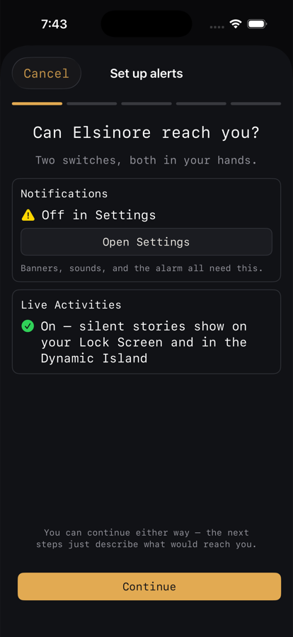

Applies to: iOS and iPadOS 26 / macOS 26.5 without Live Activities / requires the sidecar
Alerts and notifications
On this page
Elsinore is silent until you tell it otherwise, and setting it up is a guided flow rather than a wall of switches.
Push notifications require the Marcellus sidecar. Frigate has no Apple Push integration of its own, so without the sidecar there is nothing to send a notification.
The Alerts Setup flow
Settings › Alerts › Set up alerts. Five steps.

1. Permission
"Can Elsinore reach you? Two switches, both in your hands." Two tiles: Notifications ("Banners, sounds, and the alarm all need this") and, on iPhone and iPad, Live Activities. Each shows its current state and links straight to the right page of iOS Settings if it is off. You can continue either way; the later steps just describe what would reach you.
This step is skipped during onboarding, because onboarding asks about notifications one step earlier.
2. Posture
"How much do you want to hear? Pick a starting point. You'll refine it next." Three presets, plus a fourth if your current dials do not match any of them:
- Quiet: nothing pops except a person somewhere Restricted.
- Balanced: people at your doors and inside get a banner.
- Vigilant: people get a banner anywhere but the street.
- Custom: keep my current dials.
3. Subjects
"Who do you want to hear about? Per subject: ignore it, keep it quiet, or let the posture decide." Person, Vehicle, Animal, and Thing always appear. Package, Bins, and Openings appear only when your sidecar is new enough to route them. Each gets three choices:
- Ignore: never recorded, never shown.
- Quietly: a silent Live Activity at most, never a banner.
- As set: whatever the posture says for each area.
4. Feel
"Feel the difference. Try each level now so the words mean something." Four panels:
- Try it: Try Glance, Try Notify, Try Alarm. These send real test notifications so you hear what each level actually does.
- Delivery (iPhone and iPad): Live Activity first, or Notifications first.
- Sound: mute all sounds, and pick the alarm sound with a preview.
- Quiet hours: on or off, From and Until, and whether quiet hours are fully silent or just without sound. Alarm-level events still break through.
5. Review
"Here's what you'll get. Every subject, every area. Change anything later in Settings › Alerts." The full routing grid, one sentence per subject, a summary of delivery, sounds, and quiet hours, and a button to send a test through your server, which round-trips a real push all the way from the sidecar.
The attention ladder
Underneath the presets is a grid: for each subject, in each kind of place, one of Off, Log, Glance, Notify, Alarm. Settings › Alerts › Attention Ladder is where you set it directly.
Places come from your Frigate zones, classified during onboarding or later in Settings › Alerts › Zones. Unassigned zones default to Semi-private. That is why a person in the street and a person in the hallway can produce different results from the same camera.
A Recognition section lets a recognised person or vehicle relax the result by one level, or all the way down to Noted.
What needs the sidecar
Everything on this page needs the sidecar, because the sidecar is what watches Frigate and decides to send. Within that, the extended subjects (Package, Bins, Openings) appear only when the connected sidecar advertises that it routes them; the base ladder, postures, quiet hours, sounds, delivery mode, and Live Activities work with any sidecar that fronts your Frigate.
What leaves the house
The chain is: your sidecar, then a small relay run by the app's maintainer, then Apple's push service, then your device.
The relay exists only because Apple requires pushes to come from a server holding APNs credentials. It holds the credential and signs the request to Apple. It is not a general backend.
No video and no image bytes travel through the relay or through Apple. The push carries a link back to your own sidecar, and your device's notification extension fetches the actual snapshot directly from your sidecar, over your own network path, before showing you the notification. That is why a notification arrives with a picture without the picture ever having been uploaded anywhere.
The privacy policy is the authoritative statement of what the relay sees.
Doorbell rings
If your sidecar is set up for a UniFi Protect doorbell, pressing it sends a time-sensitive notification straight away: "Someone's at the door," with the camera name and time, the default sound, and a live snapshot of the doorbell camera. Tapping it, or its Live view action, opens that camera's live view. Repeat presses within about 20 seconds collapse into a single notification instead of piling up.
Settings › Alerts › Doorbell rings turns this on or off per device; it is on by default. Pausing the doorbell camera alone does not silence rings — only a global pause does. Rings are separate from Frigate's person and motion alerts, so they still arrive even when the doorbell camera's alerts are filtered or paused. This works the same on iPhone and Mac.
Setting up the doorbell itself — the UniFi Protect API key and mapping the doorbell to its Frigate camera — happens on the sidecar. See the Marcellus in-product guide, topic "UniFi Protect".
Doorbell replies
If your doorbell console has a display, the ring notification also offers three reply buttons plus Custom…, so you can answer without opening the app: "Leave package," "Be right there," and "Do not disturb" by default, or whatever three replies you've chosen. Custom… lets you type your own message on the spot. Either way, the message shows on the doorbell's own screen for a short time and then clears itself automatically — no follow-up notification, nothing to undo.
Settings › Alerts › Doorbell responses is where the three slots and the Custom… toggle live, picking from whatever messages and animations your console offers.
Live Activities and widgets
Live Activities (iPhone and iPad only) put an ongoing event on your Lock Screen and in the Dynamic Island: a snapshot, a title, an elapsed timer, a direction chip, and a badge when there is more than one story. They are driven by your server, so they start, update, escalate, and dismiss on their own, and they carry a staleness date so a stalled feed says "No longer updating" rather than lying. Tapping one opens the moment in the app.
They need both notification permission and Live Activities enabled for Elsinore in iOS Settings. The Permission step checks both.
Home screen widgets: Recent Events (small, medium, large) shows the latest detections with thumbnails, and System Status shows Frigate's health, current activity, and a storage bar. Add them from the iOS widget gallery like any other widget.
On Mac there are no Live Activities. Mac gets notifications and the menu bar companion instead. See Mac.
Permissions the app asks for
- Notifications, for banners, sounds, and alarms. Elsinore also holds the time-sensitive entitlement, so an urgent alert is not quietly downgraded by a Focus filter.
- Live Activities, which is a separate permission from notifications.
- Photos, add only, used solely to save an exported clip. Elsinore cannot read your photo library.
- Local networking, so it can reach a Frigate server on your LAN.
There is no location, camera, microphone, or contacts access.
For a notification problem, run Settings › Server › Connection Doctor, which includes push delivery and round-trip checks.
Alert History
Settings › Alert History is a feed of routing decisions, including the ones that chose not to send. Dimmed rows are what the system suppressed. Swipe a row to say it was too much or not enough, or to silence it. This is the fastest way to converge on the alerts you actually want, because you are correcting real decisions rather than guessing at dials.